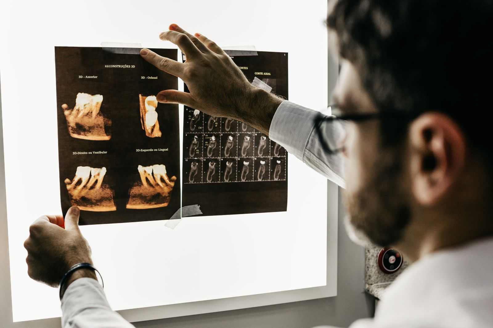

01 / НАПРАВЛЕНИЕ
Терапия
Запрос приёма по направлению лечения зубов.
От нужной услуги — сразу к запросу приёма. Вы выбираете направление и время, а форма автоматически собирает детали для администратора.
Демо: данные не отправляются. Время подтвердит администратор.

Не нужно писать длинное сообщение
Суббота 9:00–15:00
Приём по предварительной записи
Выберите услугу — она автоматически появится в заявке. Стоимость уточняется, без неподтверждённых сумм.
Запрос приёма по направлению лечения зубов.
Запрос на профессиональную гигиену полости рта.
Выбор направления перед разговором с администратором.
Запрос консультации по хирургическому направлению.
Обсудите план приёма и необходимые обследования.
Уточните возможность и условия исследования.
Нужное направление уже будет в заявке. Администратору останется согласовать специалиста, время и условия приёма.
Условия и доступность услуг подтверждает клиника. Здесь — только сведения из открытых источников.
Нет. Вы оставляете запрос на желаемое время. Администратор согласует специалиста и подтвердит запись.
Актуальная стоимость уточняется в клинике. В демо нет непроверенных цен: итоговый план и стоимость определяются после консультации.
В демо можно попросить администратора подобрать врача. Состав команды и доступность специалистов уточняются; ссылка на официальный список сотрудников размещена ниже.
На официальном сайте указано, что перед оказанием платных медицинских услуг заключаются договор и информированные добровольные согласия. Документы доступны на сайте клиники.
Выберите направление, желаемую дату и время. Конкретного врача и окончательное время подтвердит администратор.
Воскресенье — режим уточняется. Приём по предварительной записи.